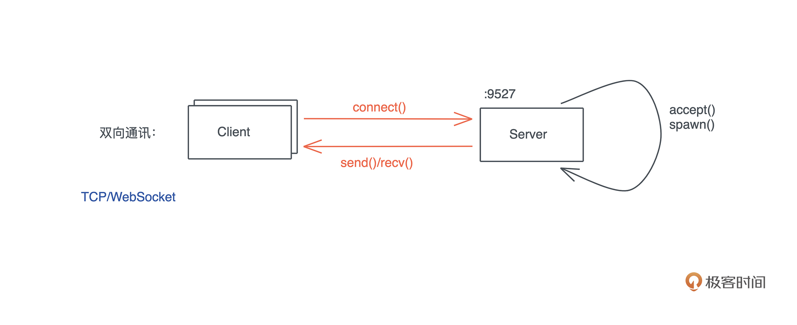
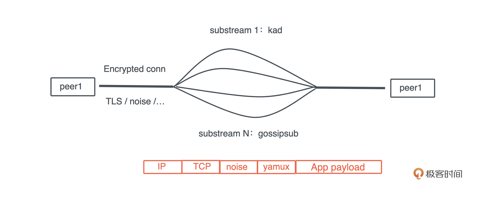

- 00 开篇词 让Rust成为你的下一门主力语言.md
- 01 内存：值放堆上还是放栈上，这是一个问题.md
- 02 串讲：编程开发中，那些你需要掌握的基本概念.md
- 03 初窥门径：从你的第一个Rust程序开始！.md
- 04 get hands dirty：来写个实用的CLI小工具.md
- 05 get hands dirty：做一个图片服务器有多难？.md
- 06 get hands dirty：SQL查询工具怎么一鱼多吃？.md
- 07 所有权：值的生杀大权到底在谁手上？.md
- 08 所有权：值的借用是如何工作的？.md
- 09 所有权：一个值可以有多个所有者么？.md
- 10 生命周期：你创建的值究竟能活多久？.md
- 11 内存管理：从创建到消亡，值都经历了什么？.md
- 12 类型系统：Rust的类型系统有什么特点？.md
- 13 类型系统：如何使用trait来定义接口？.md
- 14 类型系统：有哪些必须掌握的trait？.md
- 15 数据结构：这些浓眉大眼的结构竟然都是智能指针？.md
- 16 数据结构：Vec_T_、&[T]、Box_[T]_ ，你真的了解集合容器么？.md
- 17 数据结构：软件系统核心部件哈希表，内存如何布局？.md
- 18 错误处理：为什么Rust的错误处理与众不同？.md
- 19 闭包：FnOnce、FnMut和Fn，为什么有这么多类型？.md
- 20 4 Steps ：如何更好地阅读Rust源码？.md
- 21 阶段实操（1）：构建一个简单的KV server-基本流程.md
- 22 阶段实操（2）：构建一个简单的KV server-基本流程.md
- 23 类型系统：如何在实战中使用泛型编程？.md
- 24 类型系统：如何在实战中使用trait object？.md
- 25 类型系统：如何围绕trait来设计和架构系统？.md
- 26 阶段实操（3）：构建一个简单的KV server-高级trait技巧.md
- 27 生态系统：有哪些常有的Rust库可以为我所用？.md
- 28 网络开发（上）：如何使用Rust处理网络请求？.md
- 29 网络开发（下）：如何使用Rust处理网络请求？.md
- 30 Unsafe Rust：如何用C++的方式打开Rust？.md
- 31 FFI：Rust如何和你的语言架起沟通桥梁？.md
- 32 实操项目：使用PyO3开发Python3模块.md
- 33 并发处理（上）：从atomics到Channel，Rust都提供了什么工具？.md
- 34 并发处理（下）：从atomics到Channel，Rust都提供了什么工具？.md
- 35 实操项目：如何实现一个基本的MPSC channel？.md
- 36 阶段实操（4）：构建一个简单的KV server-网络处理.md
- 37 阶段实操（5）：构建一个简单的KV server-网络安全.md
- 38 异步处理：Future是什么？它和async_await是什么关系？.md
- 39 异步处理：async_await内部是怎么实现的？.md
- 40 异步处理：如何处理异步IO？.md
- 41 阶段实操（6）：构建一个简单的KV server-异步处理.md
- 42 阶段实操（7）：构建一个简单的KV server-如何做大的重构？.md
- 43 生产环境：真实世界下的一个Rust项目包含哪些要素？.md
- 44 数据处理：应用程序和数据如何打交道？.md
- 45 阶段实操（8）：构建一个简单的KV server-配置_测试_监控_CI_CD.md
- 46 软件架构：如何用Rust架构复杂系统？.md
- 加餐 Rust2021版次问世了！.md
- 加餐 代码即数据：为什么我们需要宏编程能力？.md
- 加餐 宏编程（上）：用最“笨”的方式撰写宏.md
- 加餐 宏编程（下）：用 syn_quote 优雅地构建宏.md
- 加餐 愚昧之巅：你的Rust学习常见问题汇总.md
- 加餐 期中测试：参考实现讲解.md
- 加餐 期中测试：来写一个简单的grep命令行.md
- 加餐 这个专栏你可以怎么学，以及Rust是否值得学？.md
- 大咖助场 开悟之坡（上）：Rust的现状、机遇与挑战.md
- 大咖助场 开悟之坡（下）：Rust的现状、机遇与挑战.md
- 特别策划 学习锦囊（一）：听听课代表们怎么说.md
- 特别策划 学习锦囊（三）：听听课代表们怎么说.md
- 特别策划 学习锦囊（二）：听听课代表们怎么说.md
- 用户故事 绝望之谷：改变从学习开始.md
- 用户故事 语言不仅是工具，还是思维方式.md
- 结束语 永续之原：Rust学习，如何持续精进？.md
29 网络开发（下）：如何使用Rust处理网络请求？
你好，我是陈天。
上一讲介绍了如何用Rust做基于 TCP 的网络开发，通过 TcpListener 监听，使用 TcpStream 连接。在 *nix 操作系统层面，一个 TcpStream 背后就是一个文件描述符。值得注意的是，当我们在处理网络应用的时候，有些问题一定要正视：
- 网络是不可靠的
- 网络的延迟可能会非常大
- 带宽是有限的
- 网络是非常不安全的
我们可以使用 TCP 以及构建在 TCP 之上的协议应对网络的不可靠；使用队列和超时来应对网络的延时；使用精简的二进制结构、压缩算法以及某些技巧（比如 HTTP 的 304）来减少带宽的使用，以及不必要的网络传输；最后，需要使用 TLS 或者 noise protocol 这样的安全协议来保护传输中的数据。
好今天我们接着看在网络开发中，主要会涉及的网络通讯模型。
双向通讯
上一讲 TCP 服务器的例子里，所做的都是双向通讯。这是最典型的一种通讯方式：- 
一旦连接建立，服务器和客户端都可以根据需要主动向对方发起传输。整个网络运行在全双工模式下（full duplex）。我们熟悉的 TCP/WebSocket 就运行在这种模型下。
双向通讯这种方式的好处是，数据的流向是没有限制的，一端不必等待另一端才能发送数据，网络可以进行比较实时地处理。
请求响应
在 Web 开发的世界里，请求-响应模型是我们最熟悉的模型。客户端发送请求，服务器根据请求返回响应。整个网络处在半双工模式下（half duplex）。HTTP/1.x 就运行在这种模式下。
一般而言，请求响应模式下，在客户端没有发起请求时，服务器不会也无法主动向客户端发送数据。除此之外，请求发送的顺序和响应返回的顺序是一一对应的，不会也不能乱序，这种处理方式会导致应用层的队头阻塞（Head-Of-Line blocking）。
请求响应模型处理起来很简单，由于 HTTP 协议的流行，尽管有很多限制，请求响应模型还是得到了非常广泛的应用。-

控制平面/数据平面分离
但有时候，服务器和客户端之间会进行复杂的通讯，这些通讯包含控制信令和数据流。因为 TCP 有天然的网络层的队头阻塞，所以当控制信令和数据交杂在同一个连接中时，过大的数据流会阻塞控制信令，使其延迟加大，无法及时响应一些重要的命令。
以 FTP 为例，如果用户在传输一个 1G 的文件后，再进行 ls 命令，如果文件传输和 ls 命令都在同一个连接中进行，那么，只有文件传输结束，用户才会看到 ls 命令的结果，这样显然对用户非常不友好。
所以，我们会采用控制平面和数据平面分离的方式，进行网络处理。
客户端会首先连接服务器，建立控制连接，控制连接是一个长连接，会一直存在，直到交互终止。然后，二者会根据需要额外创建新的临时的数据连接，用于传输大容量的数据，数据连接在完成相应的工作后，会自动关闭。-

除 FTP 外，还有很多协议都是类似的处理方式，比如多媒体通讯协议SIP 协议。
HTTP/2 和借鉴了HTTP/2 的用于多路复用的 Yamux 协议，虽然运行在同一个 TCP 连接之上，它们在应用层也构建了类似的控制平面和数据平面。
以 HTTP/2 为例，控制平面（ctrl stream）可以创建很多新的 stream，用于并行处理多个应用层的请求，比如使用 HTTP/2 的 gRPC，各个请求可以并行处理，不同 stream 之间的数据可以乱序返回，而不必受请求响应模型的限制。虽然 HTTP/2 依旧受困于 TCP 层的队头阻塞，但它解决了应用层的队头阻塞。
P2P 网络
前面我们谈论的网络通讯模型，都是传统的客户端/服务器交互模型（C/S 或 B/S），客户端和服务器在网络中的作用是不对等的，客户端永远是连接的发起方，而服务器是连接的处理方。
不对等的网络模型有很多好处，比如客户端不需要公网地址，可以隐藏在网络地址转换（NAT）设备（比如 NAT 网关、防火墙）之后，只要服务器拥有公网地址，这个网络就可以连通。所以，客户端/服务器模型是天然中心化的，所有连接都需要经过服务器这个中间人，即便是两个客户端的数据交互也不例外。这种模型随着互联网的大规模使用成为了网络世界的主流。
然而，很多应用场景需要通讯的两端可以直接交互，而无需一个中间人代为中转。比如 A和B 分享一个 1G 的文件，如果通过服务器中转，数据相当于传输了两次，效率很低。
P2P 模型打破了这种不对等的关系，使得任意两个节点在理论上可以直接连接，每个节点既是客户端，又是服务器。
如何构建P2P网络
可是由于历史上 IPv4 地址的缺乏，以及对隐私和网络安全的担忧，互联网的运营商在接入端，大量使用了 NAT 设备，使得普通的网络用户，缺乏直接可以访问的公网 IP。因而，构建一个 P2P 网络首先需要解决网络的连通性。
主流的解决方法是，P2P 网络的每个节点，都会首先会通过 STUN 服务器探索自己的公网 IP/port，然后在 bootstrap/signaling server 上注册自己的公网 IP/port，让别人能发现自己，从而和潜在的“邻居”建立连接。
在一个大型的 P2P 网络中，一个节点常常会拥有几十个邻居，通过这些邻居以及邻居掌握的网络信息，每个节点都能构建一张如何找到某个节点（某个数据）的路由表。在此之上，节点还可以加入某个或者某些 topic，然后通过某些协议（比如 gossip）在整个 topic 下扩散消息：-

P2P 网络的构建，一般要比客户端/服务器网络复杂，因为节点间的连接要承载很多协议：节点发现（mDNS、bootstrap、Kad DHT）、节点路由（Kad DHT）、内容发现（pubsub、Kad DHT）以及应用层协议。同时，连接的安全性受到的挑战也和之前不同。
所以我们会看到，P2P 协议的连接，往往在一个 TCP 连接中，使用类似 yamux 的多路复用协议来承载很多其他协议：- 
在网络安全方面，TLS 虽然能很好地保护客户端/服务器模型，然而证书的创建、发放以及信任对 P2P 网络是个问题，所以 P2P 网络倾向于使用自己的安全协议，或者使用 noise protocol，来构建安全等级可以媲美 TLS 1.3 的安全协议。
Rust 如何处理P2P网络
在 Rust 下，有 libp2p 这个比较成熟的库来处理 P2P 网络。
下面是一个简单的P2P 聊天应用，在本地网络中通过 MDNS 做节点发现，使用 floodpub 做消息传播。在关键位置都写了注释：
use anyhow::Result;
use futures::StreamExt;
use libp2p::{
core::upgrade,
floodsub::{self, Floodsub, FloodsubEvent, Topic},
identity,
mdns::{Mdns, MdnsEvent},
noise,
swarm::{NetworkBehaviourEventProcess, SwarmBuilder, SwarmEvent},
tcp::TokioTcpConfig,
yamux, NetworkBehaviour, PeerId, Swarm, Transport,
};
use std::borrow::Cow;
use tokio::io::{stdin, AsyncBufReadExt, BufReader};
/// 处理 p2p 网络的 behavior 数据结构
/// 里面的每个域需要实现 NetworkBehaviour，或者使用 #[behaviour(ignore)]
#[derive(NetworkBehaviour)]
#[behaviour(event_process = true)]
struct ChatBehavior {
/// flood subscription，比较浪费带宽，gossipsub 是更好的选择
floodsub: Floodsub,
/// 本地节点发现机制
mdns: Mdns,
// 在 behavior 结构中，你也可以放其它数据，但需要 ignore
// #[behaviour(ignore)]
// _useless: String,
}
impl ChatBehavior {
/// 创建一个新的 ChatBehavior
pub async fn new(id: PeerId) -> Result<Self> {
Ok(Self {
mdns: Mdns::new(Default::default()).await?,
floodsub: Floodsub::new(id),
})
}
}
impl NetworkBehaviourEventProcess<FloodsubEvent> for ChatBehavior {
// 处理 floodsub 产生的消息
fn inject_event(&mut self, event: FloodsubEvent) {
if let FloodsubEvent::Message(msg) = event {
let text = String::from_utf8_lossy(&msg.data);
println!("{:?}: {:?}", msg.source, text);
}
}
}
impl NetworkBehaviourEventProcess<MdnsEvent> for ChatBehavior {
fn inject_event(&mut self, event: MdnsEvent) {
match event {
MdnsEvent::Discovered(list) => {
// 把 mdns 发现的新的 peer 加入到 floodsub 的 view 中
for (id, addr) in list {
println!("Got peer: {} with addr {}", &id, &addr);
self.floodsub.add_node_to_partial_view(id);
}
}
MdnsEvent::Expired(list) => {
// 把 mdns 发现的离开的 peer 加入到 floodsub 的 view 中
for (id, addr) in list {
println!("Removed peer: {} with addr {}", &id, &addr);
self.floodsub.remove_node_from_partial_view(&id);
}
}
}
}
}
#[tokio::main]
async fn main() -> Result<()> {
// 如果带参数，当成一个 topic
let name = match std::env::args().nth(1) {
Some(arg) => Cow::Owned(arg),
None => Cow::Borrowed("lobby"),
};
// 创建 floodsub topic
let topic = floodsub::Topic::new(name);
// 创建 swarm
let mut swarm = create_swarm(topic.clone()).await?;
swarm.listen_on("/ip4/127.0.0.1/tcp/0".parse()?)?;
// 获取 stdin 的每一行
let mut stdin = BufReader::new(stdin()).lines();
// main loop
loop {
tokio::select! {
line = stdin.next_line() => {
let line = line?.expect("stdin closed");
swarm.behaviour_mut().floodsub.publish(topic.clone(), line.as_bytes());
}
event = swarm.select_next_some() => {
if let SwarmEvent::NewListenAddr { address, .. } = event {
println!("Listening on {:?}", address);
}
}
}
}
}
async fn create_swarm(topic: Topic) -> Result<Swarm<ChatBehavior>> {
// 创建 identity（密钥对）
let id_keys = identity::Keypair::generate_ed25519();
let peer_id = PeerId::from(id_keys.public());
println!("Local peer id: {:?}", peer_id);
// 使用 noise protocol 来处理加密和认证
let noise_keys = noise::Keypair::<noise::X25519Spec>::new().into_authentic(&id_keys)?;
// 创建传输层
let transport = TokioTcpConfig::new()
.nodelay(true)
.upgrade(upgrade::Version::V1)
.authenticate(noise::NoiseConfig::xx(noise_keys).into_authenticated())
.multiplex(yamux::YamuxConfig::default())
.boxed();
// 创建 chat behavior
let mut behavior = ChatBehavior::new(peer_id.clone()).await?;
// 订阅某个主题
behavior.floodsub.subscribe(topic.clone());
// 创建 swarm
let swarm = SwarmBuilder::new(transport, behavior, peer_id)
.executor(Box::new(|fut| {
tokio::spawn(fut);
}))
.build();
Ok(swarm)
}
要运行这段代码，你需要在 Cargo.toml 中使用 futures 和 libp2p：
futures = "0.3"
libp2p = { version = "0.39", features = ["tcp-tokio"] }
完整的代码可以在这门课程 GitHub repo 这一讲的目录中找到。
如果你开一个窗口 A 运行：
❯ cargo run --example p2p_chat --quiet
Local peer id: PeerId("12D3KooWDJtZVKBCa7B9C8ZQmRpP7cB7CgeG7PWLXYCnN3aXkaVg")
Listening on "/ip4/127.0.0.1/tcp/51654"
// 下面的内容在新节点加入时逐渐出现
Got peer: 12D3KooWAw1gTLCesw1bvTiKNYFyacwbAcjvKwfDsJiH8AuBFgFA with addr /ip4/192.168.86.23/tcp/51656
Got peer: 12D3KooWAw1gTLCesw1bvTiKNYFyacwbAcjvKwfDsJiH8AuBFgFA with addr /ip4/127.0.0.1/tcp/51656
Got peer: 12D3KooWMRQvxJcjcexCrNfgSVd2iChpiDWzbgRRS6c5mn9bBzdT with addr /ip4/192.168.86.23/tcp/51661
Got peer: 12D3KooWMRQvxJcjcexCrNfgSVd2iChpiDWzbgRRS6c5mn9bBzdT with addr /ip4/127.0.0.1/tcp/51661
Got peer: 12D3KooWRy9r8j7UQMxavqTcNmoz1JmnLcTU5UZvzvE5jz4Zw3eh with addr /ip4/192.168.86.23/tcp/51670
Got peer: 12D3KooWRy9r8j7UQMxavqTcNmoz1JmnLcTU5UZvzvE5jz4Zw3eh with addr /ip4/127.0.0.1/tcp/51670
然后窗口 B/C 分别运行：
❯ cargo run --example p2p_chat --quiet
Local peer id: PeerId("12D3KooWAw1gTLCesw1bvTiKNYFyacwbAcjvKwfDsJiH8AuBFgFA")
Listening on "/ip4/127.0.0.1/tcp/51656"
Got peer: 12D3KooWDJtZVKBCa7B9C8ZQmRpP7cB7CgeG7PWLXYCnN3aXkaVg with addr /ip4/192.168.86.23/tcp/51654
Got peer: 12D3KooWDJtZVKBCa7B9C8ZQmRpP7cB7CgeG7PWLXYCnN3aXkaVg with addr /ip4/127.0.0.1/tcp/51654
// 下面的内容在新节点加入时逐渐出现
Got peer: 12D3KooWMRQvxJcjcexCrNfgSVd2iChpiDWzbgRRS6c5mn9bBzdT with addr /ip4/192.168.86.23/tcp/51661
Got peer: 12D3KooWMRQvxJcjcexCrNfgSVd2iChpiDWzbgRRS6c5mn9bBzdT with addr /ip4/127.0.0.1/tcp/51661
Got peer: 12D3KooWRy9r8j7UQMxavqTcNmoz1JmnLcTU5UZvzvE5jz4Zw3eh with addr /ip4/192.168.86.23/tcp/51670
Got peer: 12D3KooWRy9r8j7UQMxavqTcNmoz1JmnLcTU5UZvzvE5jz4Zw3eh with addr /ip4/127.0.0.1/tcp/51670
❯ cargo run --example p2p_chat --quiet
Local peer id: PeerId("12D3KooWMRQvxJcjcexCrNfgSVd2iChpiDWzbgRRS6c5mn9bBzdT")
Listening on "/ip4/127.0.0.1/tcp/51661"
Got peer: 12D3KooWAw1gTLCesw1bvTiKNYFyacwbAcjvKwfDsJiH8AuBFgFA with addr /ip4/192.168.86.23/tcp/51656
Got peer: 12D3KooWAw1gTLCesw1bvTiKNYFyacwbAcjvKwfDsJiH8AuBFgFA with addr /ip4/127.0.0.1/tcp/51656
Got peer: 12D3KooWDJtZVKBCa7B9C8ZQmRpP7cB7CgeG7PWLXYCnN3aXkaVg with addr /ip4/192.168.86.23/tcp/51654
Got peer: 12D3KooWDJtZVKBCa7B9C8ZQmRpP7cB7CgeG7PWLXYCnN3aXkaVg with addr /ip4/127.0.0.1/tcp/51654
// 下面的内容在新节点加入时逐渐出现
Got peer: 12D3KooWRy9r8j7UQMxavqTcNmoz1JmnLcTU5UZvzvE5jz4Zw3eh with addr /ip4/192.168.86.23/tcp/51670
Got peer: 12D3KooWRy9r8j7UQMxavqTcNmoz1JmnLcTU5UZvzvE5jz4Zw3eh with addr /ip4/127.0.0.1/tcp/51670
然后窗口 D 使用 topic 参数，让它和其它的 topic 不同：
❯ cargo run --example p2p_chat --quiet -- hello
Local peer id: PeerId("12D3KooWRy9r8j7UQMxavqTcNmoz1JmnLcTU5UZvzvE5jz4Zw3eh")
Listening on "/ip4/127.0.0.1/tcp/51670"
Got peer: 12D3KooWMRQvxJcjcexCrNfgSVd2iChpiDWzbgRRS6c5mn9bBzdT with addr /ip4/192.168.86.23/tcp/51661
Got peer: 12D3KooWMRQvxJcjcexCrNfgSVd2iChpiDWzbgRRS6c5mn9bBzdT with addr /ip4/127.0.0.1/tcp/51661
Got peer: 12D3KooWAw1gTLCesw1bvTiKNYFyacwbAcjvKwfDsJiH8AuBFgFA with addr /ip4/192.168.86.23/tcp/51656
Got peer: 12D3KooWAw1gTLCesw1bvTiKNYFyacwbAcjvKwfDsJiH8AuBFgFA with addr /ip4/127.0.0.1/tcp/51656
Got peer: 12D3KooWDJtZVKBCa7B9C8ZQmRpP7cB7CgeG7PWLXYCnN3aXkaVg with addr /ip4/192.168.86.23/tcp/51654
Got peer: 12D3KooWDJtZVKBCa7B9C8ZQmRpP7cB7CgeG7PWLXYCnN3aXkaVg with addr /ip4/127.0.0.1/tcp/51654
你会看到，每个节点运行时，都会通过 MDNS 广播，来发现本地已有的 P2P 节点。现在 A/B/C/D 组成了一个 P2P 网络，其中 A/B/C 都订阅了 lobby，而 D 订阅了 hello。
我们在 A/B/C/D 四个窗口中分别输入 “Hello from X”，可以看到：
窗口 A：
hello from A
PeerId("12D3KooWAw1gTLCesw1bvTiKNYFyacwbAcjvKwfDsJiH8AuBFgFA"): "hello from B"
PeerId("12D3KooWMRQvxJcjcexCrNfgSVd2iChpiDWzbgRRS6c5mn9bBzdT"): "hello from C"
窗口 B：
PeerId("12D3KooWDJtZVKBCa7B9C8ZQmRpP7cB7CgeG7PWLXYCnN3aXkaVg"): "hello from A"
hello from B
PeerId("12D3KooWMRQvxJcjcexCrNfgSVd2iChpiDWzbgRRS6c5mn9bBzdT"): "hello from C"
窗口 C：
PeerId("12D3KooWDJtZVKBCa7B9C8ZQmRpP7cB7CgeG7PWLXYCnN3aXkaVg"): "hello from A"
PeerId("12D3KooWAw1gTLCesw1bvTiKNYFyacwbAcjvKwfDsJiH8AuBFgFA"): "hello from B"
hello from C
窗口 D：
hello from D
可以看到，在 lobby 下的 A/B/C 都收到了各自的消息。
这个使用 libp2p 的聊天代码，如果你读不懂，没关系。P2P 有大量的新的概念和协议需要预先掌握，这堂课我们也不是专门讲 P2P 的，所以如果你对这些概念和协议感兴趣，可以自行阅读 libp2p 的文档，以及它的示例代码。
小结
从这上下两讲的代码中，我们可以看到，无论是处理高层的 HTTP 协议，还是处理比较底层的网络，Rust 都有非常丰富的工具供你使用。
通过 Rust 的网络生态，我们可以通过几十行代码就构建一个完整的 TCP 服务器，或者上百行代码构建一个简单的 P2P 聊天工具。如果你要构建自己的高性能网络服务器处理已知的协议，或者构建自己的协议，Rust 都可以很好地胜任。
我们需要使用各种手段来应对网络开发中的四个问题：网络是不可靠的、网络的延迟可能会非常大、带宽是有限的、网络是非常不安全的。同样，在之后 KV server 的实现中，我们也会用一讲来介绍如何使用 TLS 来构建安全的网络。
思考题
- 看一看 libp2p 的文档和示例代码，把 libp2p clone 到本地，运行每个示例代码。
- 阅读 libp2p 的 NetworkBehaviour trait，以及 floodsub 对应的实现。
- 如有余力和兴趣，尝试把这个例子中的 floodsub 替换成更高效更节省带宽的 gossipsub。
恭喜你已经完成了Rust学习的第29次打卡，如果你觉得有收获，也欢迎你分享给身边的朋友，邀他一起讨论。我们下节课见～
© 2019 - 2023 Liangliang Lee. Powered by Vert.x and hexo-theme-book.